Interfaces
40-Pin Header (J1)¶
iChidori-Crest connects to the Raspberry Pi via the standard 40-pin header.
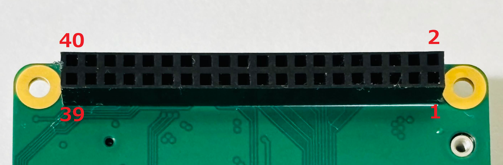
Connector type: 2×20, 2.54 mm Pin socket
Mating connector: Raspberry Pi 4/5 Model B built-in 40-pin header
40-Pin Header Assignments¶
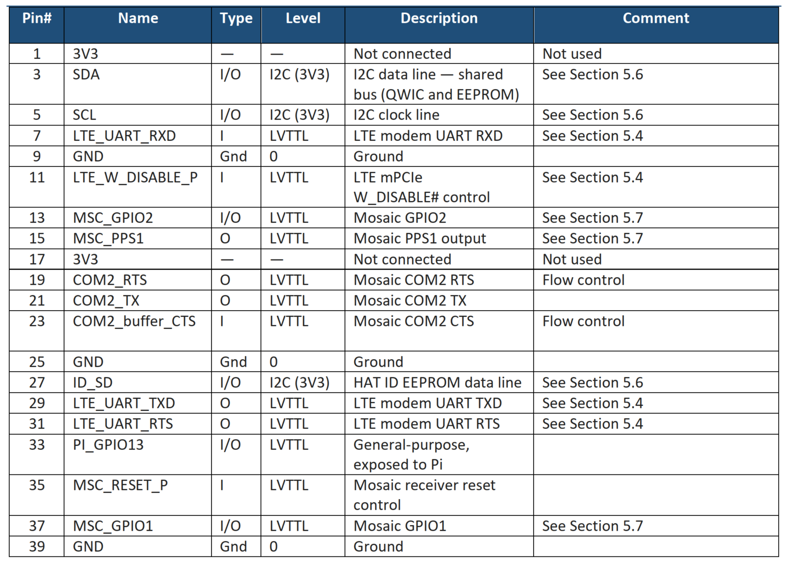
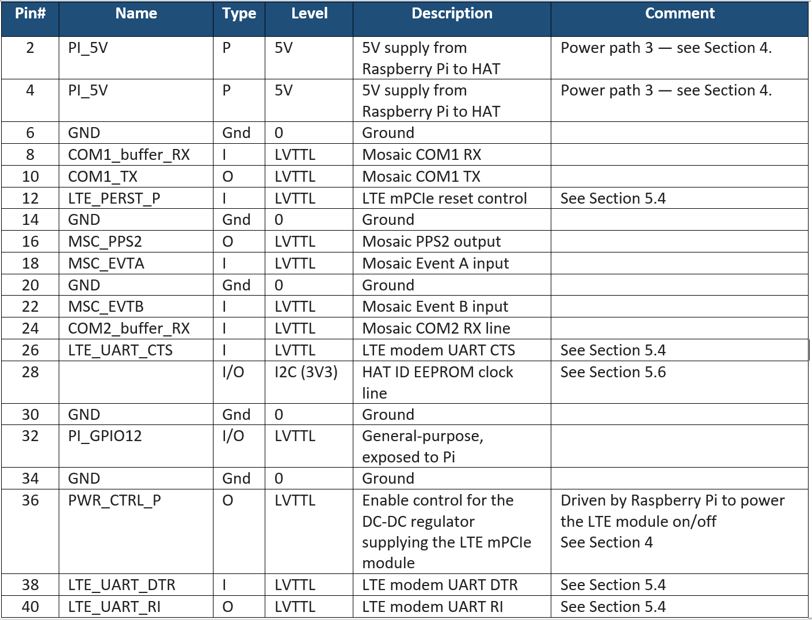
UART Interfaces Summary¶
| Interface | Raspberry Pi | Mosaic G5 | LTE Module |
|---|---|---|---|
| G5 UART | UART0/1 (GPIO14/15) | COM1 | — |
| G5 UART | UART4 (GPIO8/9/10/11) | COM2 | — |
| LTE UART | UART3 (GPIO4/5/6/7) | — | UART |
Serial port configuration
Raspberry Pi 4/5 has UART0–UART5, but most are disabled by default and require additional configuration.
For example to enable Pi UART GPIO14/15 to communicate with Mosaic G5 COM1:
- Run
sudo raspi-config→ Interface Options → Serial Port - Select Interface Options → Serial Port
- Set Login shell over serial → No
- Set Serial port hardware → Yes
- Exit and reboot
Identify the UART Device: After reboot, check the serial device aliases.
List available UART devices: On Raspberry Pi 4/5,/dev/ttyAMA* represents PL011 UARTs; /dev/ttyS* represents mini UARTs.
Power Pins¶
| Pin | Function |
|---|---|
| 2, 4 | 5V from Pi |
| 6, 9, 14, 20, 25, 30, 34, 39 | GND |
52-Pin mPCIe Slot (J2)¶
iChidori-Crest provides a standard Mini PCIe (mPCIe) slot for LTE modem modules.
Connector type: 52-pin Mini PCIe edge connector, 0.8 mm pitch
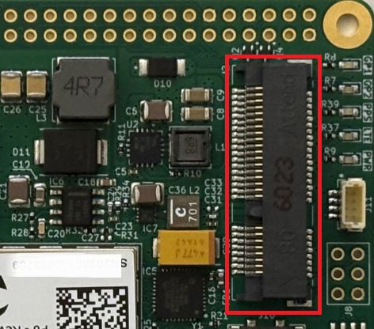
52-Pin mPCIe Assignments¶
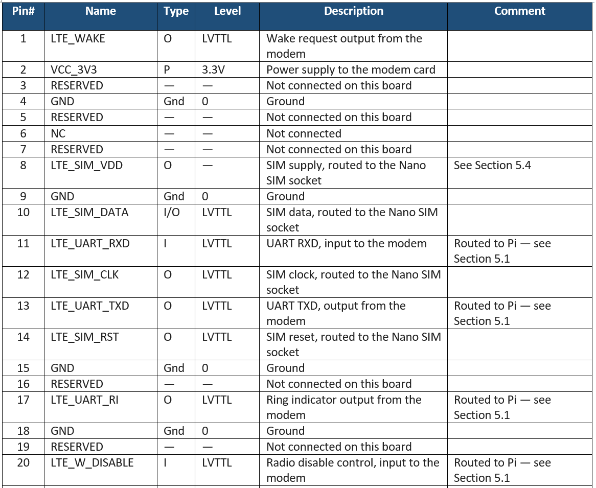
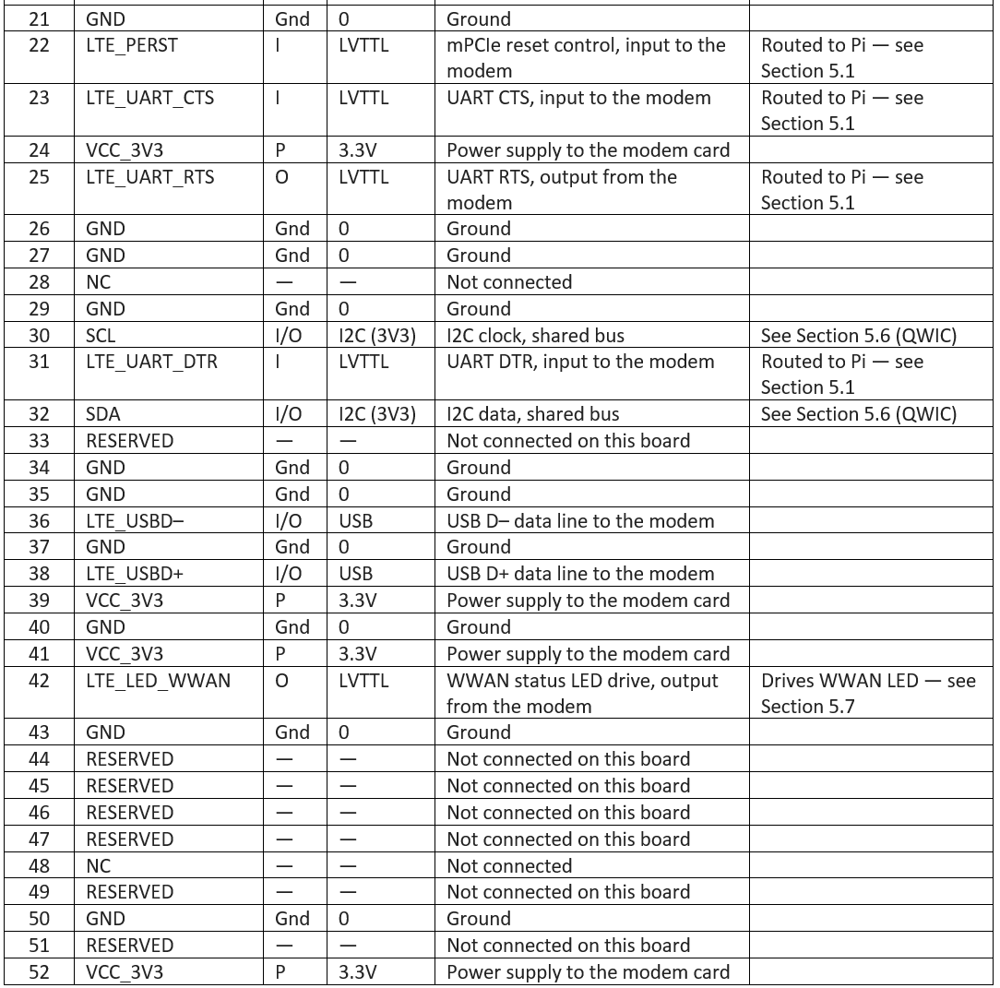
Expansion 6-Pin Header (J8)¶
Connector type: Conn_01×06, 2.54 mm pin header
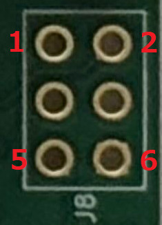
| Pin | Signal | Description |
|---|---|---|
| 1 | PI_GPIO13 | Raspberry Pi GPIO13 |
| 2 | LTE_WAKE# | LTE modem wake signal (active low) |
| 3 | PI_GPIO12 | Raspberry Pi GPIO12 |
| 4 | +3V3 | 3.3V power |
| 5 | WP | EEPROM Write protect |
| 6 | GND | Ground |
USB device Interface (J5)¶
Connector type: USB Type-C, USB 2.0
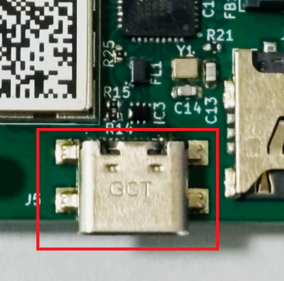
The USB-C connector serves as the primary power supply and data interface.
An internal 2-port USB hub routes the single connector to two independent device interfaces:
| Port | Connected Device |
|---|---|
| 1 | Mosaic G5 USB device interface |
| 2 | LTE mPCIe USB device interface |
GNSS Antenna Connectors¶
iChidori-Crest provides two MMCX antenna ports for the mosaic-G5 receiver.
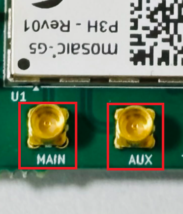
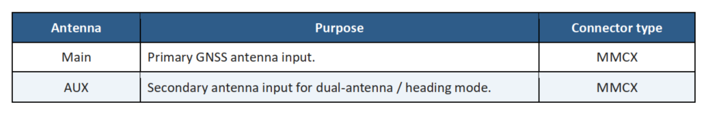
Antenna supply voltage
Both ports supply V_ANT = 3.3 V DC to power active GNSS antennas.
Antenna Mode Setting¶
iChidori-Crest is offered in variants that differ in antenna capability:
| Variant | Antenna Mode |
|---|---|
| P1, P3 | Single-antenna only |
| P3H, P6 | Single-antenna or dual-antenna (heading) |
Use the following commands to check or configure the antenna mode (needs to be done only once):
getFrontendMode— query the current antenna modesetFrontendMode, SingleAnt— configure single-antenna mode at the next rebootsetFrontendMode, DualAnt— configure dual-antenna (heading) mode at the next rebootexeCopyConfigFile, Current, Boot— save the configuration to the boot fileexeResetReceiver, Hard, none— reboot to apply
Connect an active antenna to ANT_1 (MAIN). The ANT_1 input is DC-biased and ESD-protected; an active antenna can be connected directly without additional components. Leave ANT_2 (AUX) open when operating in single-antenna mode.
SD Logging (J4)¶
A physical SD card slot is provided for direct on-board logging by the mosaic-G5 receiver.
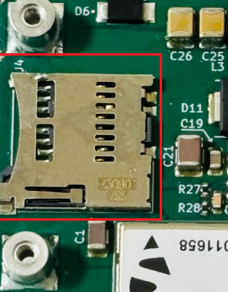
Note
This SD logging capability is intended for evaluation and debugging purposes only; it is not recommended for use in production/deployed systems.
SIM Card (J10)¶
The board provides a Nano SIM socket for the LTE module.
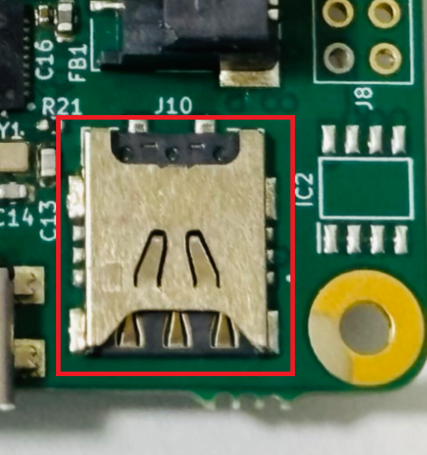
SIM slot on the LTE card
If the installed LTE card has its own SIM slot, the SIM can be inserted directly into that slot instead of the Nano SIM socket on the HAT. This allows SIM sizes other than Nano (for example Micro or Mini, depending on the card) to be used. The supported SIM types therefore depend on the LTE card in use.
QWIC Connector (J11)¶
A QWIC connector is provided for expansion I2C communication.
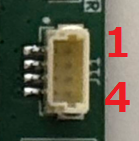
| Pin | Signal |
|---|---|
| 1 | GND |
| 2 | 3.3V |
| 3 | SDA |
| 4 | SCL |